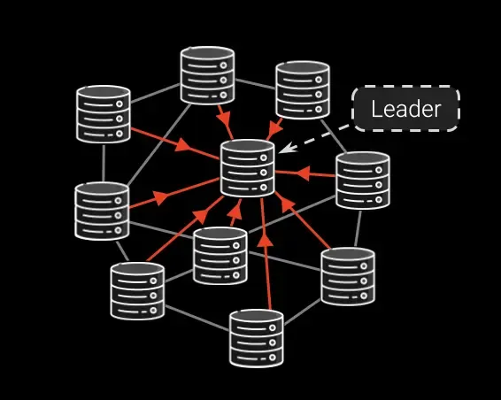
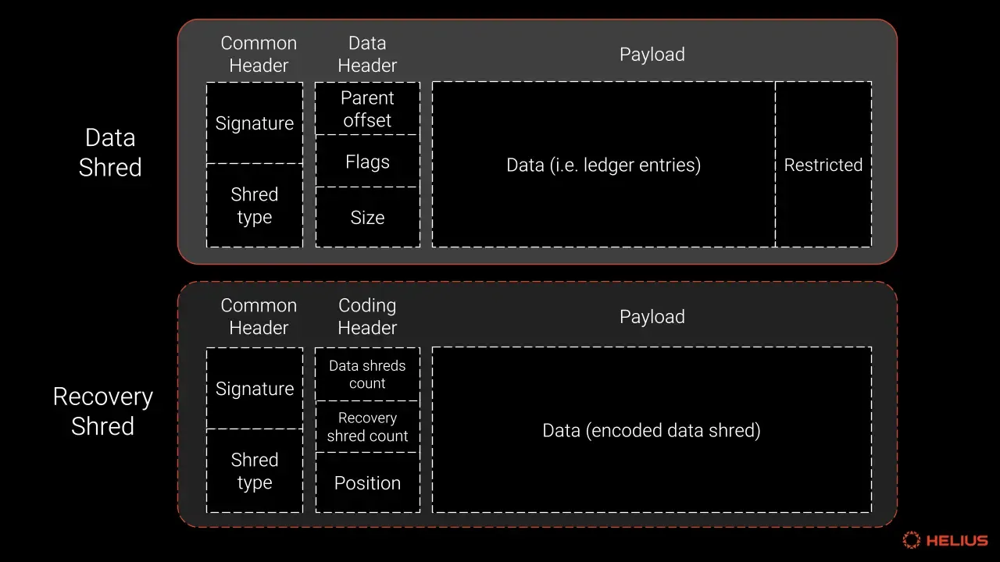
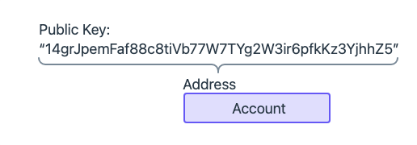
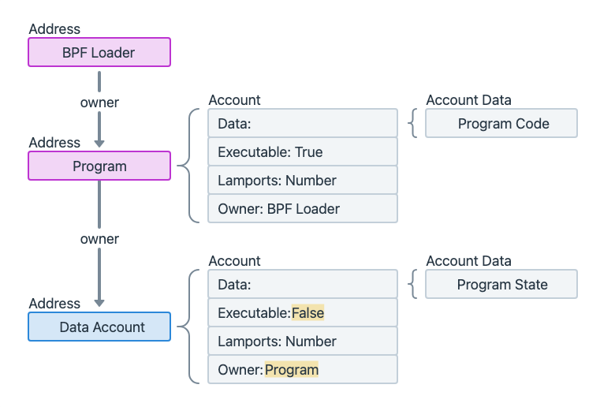
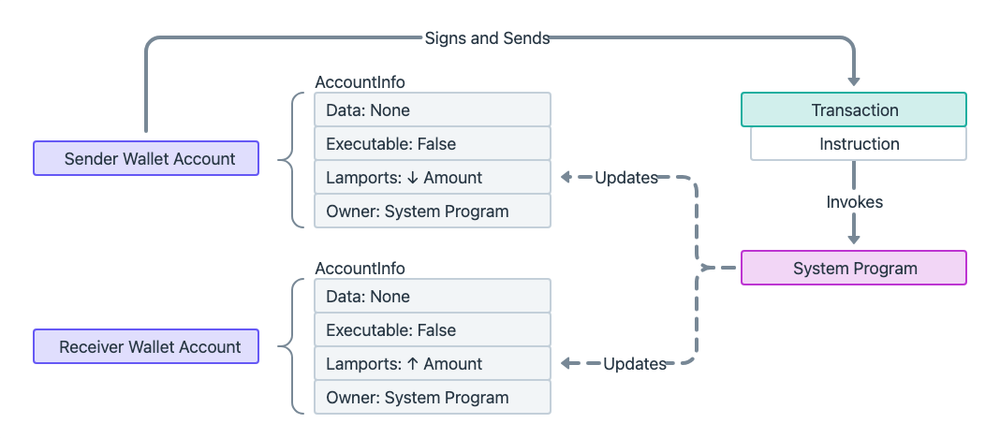
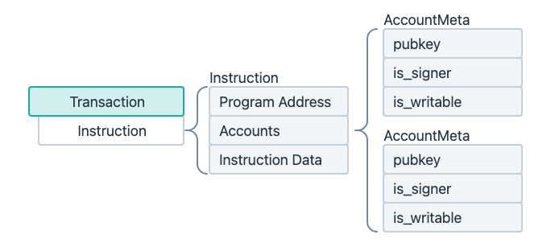
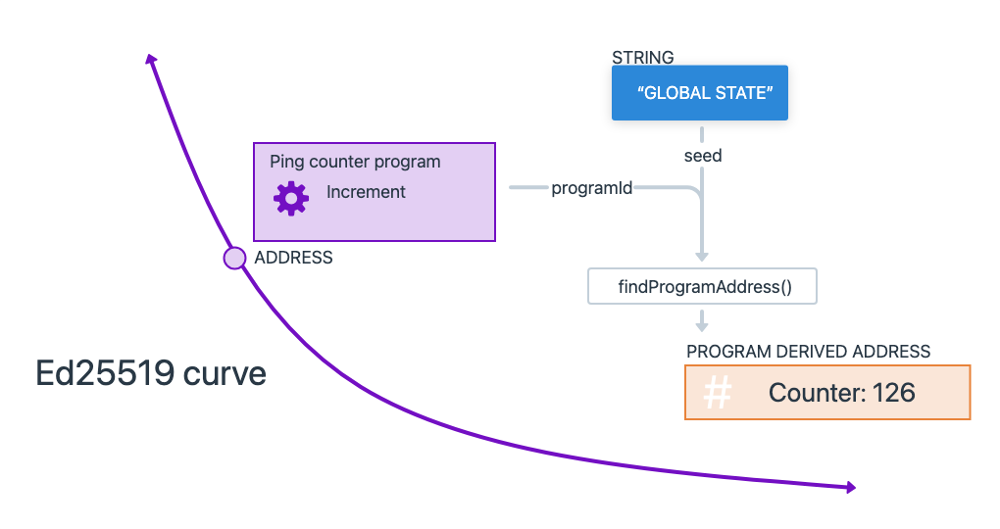

SOLANA ARCHITECTURE
1단계: 생성 및 서명
Creation & Signing
2단계: JSON-RPC 엔드포인트로 제출
JSON-RPC Endpoint Submission
RPC 호출
유저의 지갑이 TX를 RPC 노드로 전송합니다.
즉시 로컬 검증
RPC 노드가 수신 즉시 다음을 tx 검증 후, EL로 전송
3단계: 노드 내부 멤풀 편입
Local Mempool Insertion
TX가 멤풀에 존재
4단계: 멤풀 네트워크 전파
Mempool Network Propagation
브로드캐스팅
트랜잭션이 EL 가십을 통해 네트워크에 브로드캐스트됩니다.
전체 네트워크 멤풀 진입
승인된 트랜잭션은 각 피어 노드의 멤풀에 들어갑니다.
----------> slow factor
5단계: 후보 블록 조립
Candidate Block Assembly
검증자가 Block Proposer로 선택되면:
- CL 클라이언트가 EL 클라이언트의
engine_getPayloadV3 호출
- EL이 멤풀에서 트랜잭션을 가져와 실행 페이로드 구성
- EL이 페이로드를 CL에 반환, CL이 블록으로 래핑하고 서명
-------------> slow factor
6단계: 블록 전파 및 슬롯 증명
Block Propagation & Slot Attestations
블록 전파
제안자가 서명된 블록을 가십합니다.
주요 병목: 네트워크 전파 지연이 발생할 수 있는 구간입니다.
-------------> slow factor
7단계: 트랜잭션 실행 및 상태 전이
Transaction Execution & State Transition
블록 실행 프로세스
EL 클라이언트가 생성된 블록을 받아서 다음을 수행:
트랜잭션 실행
EVM 상태 트라이에 대해 트랜잭션들을 실행합니다.
-------------> slow factor
State Trie 변동
각 EL의 State Trie를 Tx 실행 결과에 따라 변동시킵니다.
8단계: 포크 선택
Fork Choice: LMD-GHOST + Casper FFG
지속적인 포크 선택
모든 노드가 정규 헤드를 선택하기 위해 지속적으로 포크 선택을 실행합니다.
LMD-GHOST
가장 많은 증명 가중치를 가진 경로를 따라 체인을 확장합니다.
Casper FFG
체크포인트 기반 최종성 메커니즘을 제공합니다.
9단계: 최종성과 비가역성
Finality → Irreversibility
최종성 달성
- 에포크 N에서 ⅔ 이상의 스테이크가 체크포인트에 증명 → 정당화
- 에포크 N+1에서 이전 정당화된 체크포인트가 같은 상태 달성 → 최종화
2 에포크
일반적인 최종성 시간 (≈ 12.8분)
주요 병목: 12.8분의 긴 최종성 시간이 이더리움의 주요 성능 제약입니다.
-------------> slow factor
핵심: 이더리움의 경제적 최종성은 매우 강력하지만, 달성하는 데 상당한 시간이 소요됩니다.
High Level Overview
솔라나는 사용자 지갑에서 시작된 트랜잭션이 Gulfstream을 거쳐 블록에 포함되고, Turbine 프로토콜을 통해 전파된 후 합의에 이르는 아키텍처를 가지고 있습니다.
핵심 특징:
- 멤풀 없는 아키텍처 - 트랜잭션이 대기하지 않고 직접 리더에게 전달
- PoH 기반 시간 동기화 - 글로벌 시계 역할로 합의 효율성 극대화
- 병렬 트랜잭션 처리 - 계정 충돌 사전 검사로 동시 실행 가능
- 효율적인 블록 전파 시스템 - Turbine 프로토콜로 O(log N) 전파
- 연속적 블록 생성 - 400ms 슬롯마다 실시간 블록 생성
성능 우위: 이러한 혁신적 설계로 솔라나는 초당 65,000+ 트랜잭션 처리, $0.00025 평균 수수료, 400ms 블록 시간을 달성하며 블록체인 트릴레마(확장성, 보안성, 탈중앙화)를 동시에 해결합니다.
The Scalability Challenge
Why Blockchain Needs to Scale
확장성은 블록체인 업계의 지속적인 도전과제입니다. 탈중앙화 금융의 폭발적인 성장과 함께 블록체인의 확장성 수요가 증가하고 있습니다.
🟣 솔라나의 접근법
- 레이어1 직접 최적화: 복잡한 레이어링 없이 기본 체인 성능 향상
- 높은 하드웨어 스펙 활용
- 비동기 처리: 모든 검증과 처리를 비동기 상태로 수행
- 빠른 Propagation: Gulfstream 통해 빠르게 전파
The Basics: Core Components of Solana
Leader
특정 시간(슬롯) 동안 블록을 생성할 책임이 있는 검증자(Validator). 약 1.6초(4 슬롯) 동안 연속으로 블록을 생성합니다.
Transaction
솔라나 블록체인의 상태를 변경하기 위한 서명된 지시사항들의 묶음. 모든 계정을 미리 명시하여 병렬 처리가 가능합니다.
Proof of History (PoH)
트랜잭션의 순서를 암호학적으로 증명하여 노드 간 합의를 빠르게 만드는 글로벌 시계 역할을 하는 기술입니다.
솔라나 리더(Leader)란?
네트워크의 심장: 블록 생성 책임자

솔라나 네트워크에서 리더는 특정 시간 구간(슬롯) 동안 블록을 생성하고 네트워크에 전파하도록 지정된 검증자(Validator)입니다.
핵심 차이점: 이더리움·비트코인과 달리 솔라나는 미리 계산된 리더 스케줄을 사용해 끊김 없는 블록 생산을 보장하며, 하나의 리더가 약 1.6초(4 슬롯) 동안 연속으로 블록을 생성합니다.
리더의 핵심 업무 4단계
초단위로 반복되는 블록 생성 과정
1
트랜잭션 수집
리더 슬롯이 시작되면, 클라이언트와 다른 노드들이 전송한 트랜잭션을 Gulf Stream 메커니즘으로 앞당겨 전달받아 메모리 큐에 정렬합니다.
2
PoH(Proof-of-History) 진행
리더는 약 400ms마다 '틱(Tick)' 해시를 생성해 시간 순서를 증명하며, 일부 틱에 트랜잭션 배치를 삽입합니다.
3
병렬 실행 & 상태 업데이트
런타임에서 활용해 병렬로 트랜잭션을 실행, 수수료 징수·계정 상태 변경·루트 해시 계산을 마칩니다.
4
블록(→ 슈레드) 생성 & 전파
실행 결과를 포함한 블록을 128 KB 단위 슈레드(Shred)로 분할하고, Turbine 트리 네트워크를 통해 O(log N) Hop으로 전체 노드에 배포합니다.
TLDR: 리더는 트랜잭션 수집 → PoH → 병렬 실행 → 슈레드 전파를 초단위로 반복해, 솔라나가 수천 TPS를 유지하도록 만드는 네트워크의 "심장"입니다.
검증자들은 선정된 리더에게 트랜잭션을 보내고, 리더는 받은 트랜잭션을 바탕으로 블록을 생성합니다. 블록을 생성하면서 동시에 PoH 해시를 돌려 솔라나의 트랜잭션 순서까지 결정하는 것을 알 수 있습니다.
어떻게 리더가 선출되나?
사전 예측 가능한 스케줄링
에포크별 계산
매 에포크(약 2-3일)마다 네트워크 스냅샷을 기준으로 지분 증명(PoS) 가중 라운드로빈 방식으로 리더 순서표가 계산됩니다.
사전 예측
모든 노드는 "슬롯 → 리더" 매핑을 미리 알고 있어, 자신의 리더 슬롯이 오기 전에 하드웨어·네트워크 준비를 완료할 수 있습니다.
사전 예측의 장점: 트랜잭션은 "미래 리더"에게 바로 전달되므로, 줄 서기 지연이 크게 줄어들고 처리량(TPS)이 높아집니다.
보상과 페널티
- 보상: 리더가 수집한 수수료 (MEV) + 인플레이션 보상을 받습니다.
- 실패 시: 슬롯 내에 블록을 못 만들면 해당 슬롯은 '스킵', 반복되면 페널티(잠재적 슬래싱) 위험이 있습니다.
- 경제성: 리더 역할을 제대로 수행하지 못하면 보상을 잃게 되므로, 검증자들은 정직하게 행동할 경제적 유인이 있습니다.
Proof of History (PoH)
솔라나는 총 처리량(단위 시간당 처리되는 트랜잭션 수)과 지연시간(트랜잭션 제출부터 확인까지 걸리는 시간) 모든 면에서 빠르기를 목표로 합니다. POS만으로도 정직한 노드들과의 합의를 보장할 수 있지만, PoH는 이를 강화하여 보안을 유지하면서도 가장 빠른 PoS 네트워크를 달성합니다.
The Clock Synchronization Problem
리더 스케줄이 설정되었지만 문제가 남아있습니다: 리더들이 순서를 벗어나 블록을 방출하는 것을 어떻게 방지할까요?
🔴 이더리움의 시간
- NTP Server + Local OS time 사용
- 정확한 기준이 없음
- 이렇게 하는것이 가능한 이유 = 12초 블록 시간으로 여유 있음
- 노드 간 시간 차이 허용 가능
🟣 솔라나의 시간
- 400ms의 매우 짧은 블록 시간
- 리더 스케줄: A → C → B
- 동시 블록 생성 위험성 높음
- 정밀한 시간 동기화 필수
핵심 문제: 솔라나는 400ms라는 매우 짧은 블록타임을 가지고 있기 때문에, 예를 들어 리더 스케줄이 A → C → B로 나와 있다고 할 때 서로 블록을 동시에 생성하는 일이 발생할 수 있습니다. 기존 방식처럼 NTP나 로컬 OS 시간에 의존하면 부정확한 동기화로 인한 충돌이 빈번히 발생합니다.
The Proof of History Solution
PoH는 이 문제에 대한 솔라나의 해결책입니다. 인간 시간척도나 "벽시계 시간" 대신, 반복적인 SHA-256 해시 함수를 특정 횟수만큼 실행하는 데 걸리는 시간을 기반으로 한 "시계"를 사용합니다.
핵심 전제: 현재 컴퓨터가 아무리 성능이 좋아져도 해시를 일정시간 이상으로 빠르게 돌릴 수 없다는 물리적 한계가 존재합니다. 이는 PoH가 작동할 수 있는 기반이 됩니다.
1
각 검증자의 틱 생성
각 밸리데이터들이 각자 tick을 계속 돌립니다. 리더 스케줄이 나왔을 때 각 밸리데이터들은 틱을 돌려서 자신의 리더 차례가 오기까지 얼만큼의 시간이 지났는지를 판단합니다.
2
SHA-256 기반 시계
컴퓨터들은 이미 일반적으로 달성 가능한 "가장 빠른 SHA-256 해시 구현"에 수렴했습니다. 가장 빠른 프로세서를 사용하는 모든 컴퓨터는 초당 특정 횟수의 SHA-256 해시만 계산할 수 있습니다.
3
틱(Tick) 측정
솔라나는 인간 척도가 아닌 초당 반복적인 SHA-256 해시 횟수로 시간을 측정합니다. 실제로는 초의 작은 부분을 근사하는 SHA-256 해시 반복 횟수인 "틱"이라는 단위로 측정합니다.
4
시간 증명
초기 값과 100만 번의 SHA-256 반복 후 계산된 값을 제공함으로써, 검증자는 반복적인 SHA-256 해시 함수를 실행하는 데 약 1초의 시간을 소비했음을 증명할 수 있습니다.
자신의 차례 판단: 자신의 차례가 되면 검증자는 틱 계산을 통해 정확한 타이밍을 알 수 있고, 다른 검증자들과 동시에 블록을 생성하는 충돌을 방지할 수 있습니다.
Block Streaming with PoH
솔라나에서 블록은 리더가 트랜잭션을 검증하면서 "스트리밍"됩니다. 제안된 트랜잭션 블록을 전송하는 시간이 실제로 트랜잭션을 검증하는 시간과 겹쳐서, 솔라나의 낮은 지연시간에 기여하는 강력한 파이프라이닝 형태가 됩니다.
🔴 전통적 방식
- 블록 완성 후 전체 전송
- 순차적 검증 과정
- 시간 동기화 복잡성
- 포크 해결 비용 증가
🟣 PoH 방식
- 블록 스트리밍과 검증 동시 진행
- SHA-256 기반 시간 증명
- 암호학적 시간 순서 보장
- 검열 저항성 확보
Censorship Resistance Example
세 명의 리더 A, B, C가 있고 리더 스케줄이 A - B - C라고 가정해 봅시다. A가 블록을 방출한 후 B의 차례인데, C가 "부정행위"를 시도하여 B의 차례 동안 자신의 블록을 방출하려고 한다면 어떻게 될까요?
Conclusion
요약: 솔라나는 스테이크 가중 노드의 투표력을 사용하여 트랜잭션에 대한 합의를 달성하는 Proof of Stake 네트워크입니다. 네트워크의 속도는 리더 스케줄에 내장된 자연스러운 포크 회피 메커니즘을 통해 향상되며, 리더 스케줄이 준수되면서 높은 속도와 낮은 지연시간을 유지하도록 보장하는 PoH 메커니즘을 통해 더욱 향상됩니다.
PoH는 PBFT 대비 시간 증명에 대한 합의 과정을 생략시키고, 통신 오버헤드를 극적으로 줄여 솔라나가 높은 TPS를 달성하는 핵심적인 역할을 합니다. 이는 검열 저항적이며 1/3 이상의 정직한 노드가 있는 한 안정적으로 작동하는 것으로 입증된 시스템입니다.
Transaction Structure
Anatomy of a Solana Transaction
트랜잭션은 솔라나 블록체인의 상태를 변경하기 위한 서명된 지시사항들의 묶음입니다. 단순한 토큰 전송부터 복잡한 스마트 컨트랙트 실행까지 모든 활동은 트랜잭션을 통해 이루어집니다.
- 헤더 (Header): 트랜잭션에 서명해야 하는 계정 주소 목록에 대한 참조를 포함합니다. 서명이 필요한 계정과 읽기 전용 계정을 구분합니다.
- 계정 주소 목록 (Account Addresses): 트랜잭션 동안 읽거나 쓸 모든 계정 목록입니다. 이 목록을 사전에 명시하는 것은 솔라나의 핵심적인 특징으로, 이를 통해 병렬 처리가 가능해집니다.
- 최근 블록해시 (Recent Blockhash): 중복되거나 오래된 트랜잭션을 방지하는 데 사용됩니다. 약 1분(150 슬롯) 후에 만료되어 처리되지 않은 트랜잭션이 계속 떠도는 것을 방지합니다.
- 명령어 (Instructions): 트랜잭션의 핵심 로직입니다. 전송, 발행, 소각 등 특정 작업을 나타내며, 실행할 프로그램, 계정, 데이터 등을 지정합니다.
병렬 처리의 비밀: 솔라나는 트랜잭션마다 참조될 모든 계정을 데이터 안에 미리 포함합니다. 덕분에 노드는 실행 전에 관련 계정을 한눈에 파악할 수 있고, 사용자는 트랜잭션을 보낼 때 필요한 계정을 모두 지정해야 합니다. 이 설계 철학은 솔라나 프로그램(스마트 컨트랙트)을 작성할 때 특히 두드러지며, 계정 충돌을 사전에 제거해 병렬 처리가 극대화되면서 압도적인 TPS를 달성할 수 있습니다.
개발자 워크플로우
솔라나 프로그램을 작성할 때, 개발자는 1) Instruction을 호출하는 트랜잭션에 필요한 모든 계정을 지정하고, 2) 그 계정들을 대상으로 원하는 로직을 실행하는 Instruction(명령)을 정의하는 흐름을 따릅니다.
수수료 구조
총 수수료 = 우선순위 수수료 + 기본 수수료. 기본 수수료는 서명당 5,000 램포트이며, 우선순위 수수료는 컴퓨팅 유닛 가격 × 컴퓨팅 유닛 한도로 계산됩니다.
QUIC Protocol
UDP-Based High-Performance Networking
2022년 말 솔라나에서 리더 교체 트랜잭션 관리를 위해 적용한 UDP 기반의 네트워킹 프로토콜입니다. 구글에서 주도적으로 개발하다 현재는 IETF 표준화가 진행되고 있습니다.
솔라나에서 QUIC 사용 이유: 솔라나의 빠른 블록 생성 간격(400ms)과 빈번한 리더 교체에서 모든 검증자가 새 리더와 빠른 연결을 맺어야 하므로, QUIC의 저지연 특성이 핵심적입니다. 기존 TCP로는 혼잡 제어와 순차적 패킷 전송으로 인한 병목이 발생하지만, QUIC은 이를 해결합니다.
Transaction Lifetime: Complete Journey
10 Critical Steps
사용자 지갑에서 시작된 트랜잭션이 최종 합의에 이르기까지의 전체 여정을 살펴보겠습니다.
1-3
Transaction Submission & Gulfstream
4-5
Leader Processing & Block Building
6-8
Turbine Propagation & TVU
9-10
Consensus & Finalization
Transaction Lifecycle: Steps 1-5
1
트랜잭션 송신
클라이언트가 RPC 프로바이더로 트랜잭션을 전송합니다. RPC 프로바이더는 트랜잭션을 RPC 노드에게 전달합니다.
2
걸프스트림(Gulfstream)
RPC 노드가 벨리데이터에게 혹은 직접 트랜잭션을 전달합니다. 멤풀 없이 트랜잭션을 효율적으로 선-전송하여 처리 대기 시간을 최소화합니다.
3
리더 처리
현재 슬롯의 리더는 PoH 시퀀스에서 트랜잭션의 순서를 확인하고, 트랜잭션의 유효성을 검증한 후, 상태(State)를 업데이트합니다.
4
블록 완성 & 전파 준비
Bank 업데이트가 완료되면, 리더는 완성된 블록 + PoH 해시를 다른 검증자에게 전파합니다.
5
터빈(Turbine) 프로토콜
Turbine은 블록 데이터를 여러 Shred로 분할하며, Shred마다 루트 노드를 돌려가며 병렬 전송합니다(트리 방식).
Transaction Lifecycle: Steps 6-10
6
검증자 수신
검증자들이 블록 Shred를 수신하고, PoH 해시를 받아 자체 PoH를 업데이트합니다. 받은 Shred를 자신의 Turbine 하위 노드로 재전송합니다.
7
TVU(Transaction Validation Unit)
모든 Shred 검증이 완료되면 로컬 Bank를 업데이트합니다. 전체 과정은 TVU 모듈 내부에서 동작합니다.
8
Replay Stage (TVU 핵심)
Replay Stage에서 대부분의 핵심 로직이 실행됩니다: 블록 투표(voting), PoH reset, Bank(state) 변경 반영, 차기 리더 전환
9
PBFT 스타일 합의
Solana는 PBFT 기반 합의를 수행하되, PoH clock 덕분에 노드 간 통신을 최소화하면서 투표가 가능합니다.
10
체인 품질 보장
슬롯마다 단 하나의 리더만 블록을 제안할 수 있으며, 전 노드가 PoH로 시간 동기화하여 포크 확률을 감소시킵니다.
Gulf Stream: Transaction Forwarding Protocol
Mempool-less Transaction Processing
정의: Gulf Stream은 네트워크 노드가 트랜잭션을 수신한 순간부터 현재 슬롯의 리더에게 전달되어 TPU의 Fetch Stage에서 받아들여지기까지의 전체 과정입니다.
1
RPC 노드 수신
User → RPC Node로 HTTP를 통해 트랜잭션 전송. RPC는 게이트웨이 역할을 하며 unstaked이므로 합의에 참여하지 않음.
2
QUIC 변환 및 리더 조회
RPC가 HTTP를 QUIC로 변환하고, 리더 스케줄을 조회하여 현재 및 다음 리더의 주소와 포트 정보를 확인.
3
리더 직접 전달
결정론적으로 정해진 리더에게 직접 전달. 가십 네트워크가 아닌 point-to-point 전송으로 효율성 극대화.
Recent Blockhash & Transaction Lifecycle
Automatic Transaction Expiration
핵심 메커니즘: 모든 솔라나 트랜잭션은 Recent Blockhash를 포함해야 하며, 150 슬롯 후 자동 만료됩니다. 이는 중복 트랜잭션 방지와 네트워크 정리를 동시에 수행합니다.
🔴 기존 Mempool 방식
- 트랜잭션이 무기한 대기 가능
- 낮은 수수료 시 며칠-몇 주 지연
- nonce 기반 중복 방지
- 가십으로 전체 네트워크 전파
🟣 솔라나 Gulf Stream
- Recent Blockhash로 1분 내 자동 만료
- mempool 없이 즉시 처리 또는 제거
- blockhash 기반 중복 방지
- 리더에게 직접 전달
Stake-weighted Quality of Service (SWQoS)
Preventing Spam and Sybil Resistance
SWQoS는 2024년 초 도입된 메커니즘으로, 리더가 staked validators를 통해 라우팅된 트랜잭션 메시지를 우선순위로 처리할 수 있게 합니다. 높은 스테이크를 가진 검증자일수록 리더에게 트랜잭션 메시지 패킷을 전송할 수 있는 용량이 비례적으로 증가합니다.
밸리데이터들은 자신의 스테이크 비율에 따라 리더에게 보낼수 있는 트랜잭션 bandwidth를 결정합니다.
80%
Staked peers 전용 (2,000 연결)
20%
Non-staked nodes (500 연결)
Sybil 공격 방지
IP 주소를 통해 검증 가능한 QUIC 연결로 낮은 스테이크나 non-staked 노드들의 공격을 효과적으로 차단합니다.
Priority Lane 시스템
고속도로의 유료 우선차선과 유사한 구조로, RPC 노드들이 validator의 stake-weighted 용량을 임대할 수 있습니다.
트랜잭션 포함률 향상
RPC 노드가 더 높은 대역폭을 확보하여 블록에 포함될 트랜잭션 비율을 크게 증가시킬 수 있습니다.
생태계 영향: SWQoS는 트랜잭션을 리더에게 전달하는 요구사항을 높이고 스팸 공격의 효과를 크게 감소시켰습니다. 이로 인해 높은 트래픽을 처리하는 애플리케이션들은 자체 검증자 노드를 운영하여 수직 통합하는 방향으로 발전하고 있습니다.
Block Building: Continuous vs Discrete
Real-time Block Assembly
🔴 Discrete Block Building
- 전체 블록 완성 후 브로드캐스트
- 블록 조립 완료까지 대기
- 순차적 처리로 지연 발생
- 네트워크 부하 집중
🟣 Solana Continuous Building
- 할당된 시간 동안 동적 조립 및 스트리밍
- 실시간 블록 생성 및 전파
- 지연 시간 대폭 단축
- 효율적인 네트워크 활용
리더 준비 과정: 리더가 되기 2슬롯 전에 트랜잭션 전달을 중단하고 준비합니다. 이 기간 동안 전체 네트워크가 곧 리더가 될 노드에게 패킷을 집중 전송하여 기가바이트/초 수준의 트래픽 폭증이 발생합니다.
Transaction Processing Unit (TPU)
Core Block Production Logic
트랜잭션 메시지가 도착하면 Transaction Processing Unit(TPU)로 진입합니다. TPU는 블록 생성을 담당하는 검증자의 핵심 로직입니다.
1
Fetch Stage
QUIC을 통해 트랜잭션을 수신하는 첫 번째 단계입니다.
2
SigVerify Stage
서명 유효성 검증, 올바른 서명 수 확인, 중복 트랜잭션 제거 등 엄격한 검증을 수행합니다.
3
Banking Stage
실제 블록 구축 단계로, TPU의 가장 중요한 부분입니다. 병렬 처리와 상태 업데이트를 담당합니다.
4
PoH Service
엔트리 해시를 Proof of History 서비스로 전송하여 시간 순서를 기록합니다.
핵심 원칙: 블록이 승인되려면 모든 트랜잭션이 유효하고 다른 노드들에 의해 재현 가능해야 합니다.
Banking Stage: Parallel Processing Engine
The Heart of Solana's Performance
Bank 정의: Bank는 현재 슬롯의 월드-스테이트 를 담고있는 임시 메모리 공간입니다. 충분한 검증자가 투표한 후 블록이 최종화되면, bank의 계정 업데이트를 디스크에 플러시하여 영구적으로 만듭니다. 체인의 최종 상태는 모든 확정된 트랜잭션의 결과이며, 이 상태는 블록체인 히스토리에서 항상 결정론적으로 재생성할 수 있습니다.
트랜잭션 충돌 규칙
- 두 번의 쓰기: 두 트랜잭션이 모두 같은 계정에 쓰기 시도
- 읽기 + 쓰기: 하나는 읽기, 다른 하나는 쓰기 시도
- 해결책: 충돌하는 트랜잭션은 다른 엔트리에 배치하여 순차 실행
1
엔트리로 그룹화
confict가 없는 트랜잭션 64개를 "엔트리"로 패키징.
Tx에는 각 tx가 읽고 쓸 계정들의 목록이 들어있기 때문에 그룹화 용이함.
2
계정 락킹
트랜잭션 실행에 필요한 계정들을 잠금. 사전 명시된 계정 목록으로 Race condition 방지.
3
유효성 검증
트랜잭션이 최신이지만 중복 처리되지 않았는지 확인. Recent Blockhash 검증 포함.
4
SVM 실행
계정 로드 후 트랜잭션 로직 실행, 계정 상태 업데이트. rBPF 기반 eBPF 프로그램의 JIT 컴파일.
5
PoH 기록 & 커밋
엔트리 해시를 PoH 서비스로 전송. 성공 시 모든 변경사항을 bank에 커밋하고 계정 락 해제.
Transaction Ordering Flexibility
Design Philosophy & Economic Implications
핵심 설계 원칙: 솔라나 프로토콜은 트랜잭션 검증에 대해서는 매우 엄격한 규칙을 가지고 있지만, 리더가 블록 내에서 트랜잭션을 실행해야 하는 특정 순서는 강제하지 않습니다.
유연한 순서 결정
- 리더 재량: 블록 내 트랜잭션 순서 자유 결정
- MEV 기회: Maximum Extractable Value 최적화
- 수수료 우선순위: 높은 수수료 트랜잭션 우선 처리
Jito & 블록 빌딩 마켓
- Jito: 검증자와 거래자 간 MEV 수익 공유 플랫폼
- 번들링: 복잡한 트랜잭션 그룹을 하나로 묶어 처리
- 경매 시스템: 블록 공간에 대한 경쟁적 입찰
Turbine: 솔라나의 핵심 혁신
BitTorrent에서 영감받은 블록 전파 시스템
Mert Mumtaz (Helius CEO): "The most interesting part about Solana is not parallelization, the SVM, or Toly's tweets. It is something you probably haven't heard of: Turbine."
Banking 단계에서 트랜잭션이 엔트리로 조직되어 타임스탬핑을 위해 Proof of History 스트림에 전송됩니다. 블록의 Bank가 업데이트되면, 조직된 엔트리들이 다음 단계인 Turbine을 위해 준비됩니다.
Turbine은 리더가 자신의 블록을 네트워크의 나머지 부분에 전파하는 과정입니다. BitTorrent에서 영감을 받아 빠르고 효율적으로 설계되어, 통신 오버헤드를 줄이고 리더가 전송해야 하는 데이터 양을 최소화합니다.
32 + 32
데이터 Shreds + 복구 Shreds
Shredding Process: 데이터 분해와 복구
Forward Error Correction을 통한 내결함성

Turbine은 트랜잭션 데이터를 "Shreds"로 분해하는 "Shredding" 과정을 통해 이를 달성합니다. Shreds는 최대 1280바이트의 작은 데이터 패킷으로, 비디오 스트림의 개별 프레임과 유사합니다. 재조립되면 이러한 Shreds를 통해 검증자들이 전체 블록을 재생할 수 있습니다.
Shreds는 UDP를 사용하여 인터넷을 통해 검증자들 사이에서 전송되며, 패킷 손실이나 악의적인 패킷 삭제를 처리하기 위해 소거 코딩(Erasure Coding)을 활용합니다. 소거 코딩은 다항식 기반의 오류 검출 및 수정 방식으로 데이터 무결성을 보장합니다. 일부 Shreds가 손실되더라도 블록은 여전히 재구성될 수 있습니다.
FEC 배치 (Forward Error Correction)
- 구성: 기본적으로 64개 Shreds (32개 데이터 + 32개 복구)
- 복구 수준: 배치 내 최대 50% 패킷 손실/손상까지 복구 가능
- 배치별 복구: 데이터 복구는 FEC 배치별로 이루어짐
머클화 및 체인 연결
- 배치 머클화: 각 64 Shreds 배치가 머클화됨
- 리더 서명: 루트는 리더에 의해 서명되고 이전 배치에 연결
- 검증 경로: 머클 루트 체인이 진위성과 무결성의 검증 가능한 경로 제공
보안 보장: 이 과정은 네트워크 내의 어떤 노드에서든 Shreds를 안전하게 획득할 수 있도록 보장하며, 머클 루트의 체인은 진위와 무결성을 검증할 수 있게 합니다.
Turbine Tree: 계층적 전파 아키텍처
Outbound Data Egress Pressure 완화
리더는 처음에 단일 루트 노드로 브로드캐스팅하며, 이 루트 노드가 Shreds를 모든 다른 검증자 노드에 전파합니다. 이 루트 노드는 각 Shred마다 변경됩니다. 검증자들은 층(Layer)으로 조직되어 "Turbine Tree"를 형성합니다.
실제 팬아웃 값 : 200
홉 수 : 2-3
계층적 배치 전략
- 상위층: 더 큰 지분을 가진 검증자들이 트리 상단에 배치
- 하위층: 더 적은 지분을 가진 검증자들이 트리 하단에 배치
- 최적화: 지분 기반 배치로 네트워크 신뢰성과 효율성 극대화
동적 보안 메커니즘
- 트리 회전: 보안상 이유로 각 새로운 Shreds 배치마다 트리 순서 회전
- 루트 변경: 각 Shred마다 다른 루트 노드 사용
- 분산 부하: 송신 및 재송신 시스템으로 부하 분산
핵심 목표: 이러한 시스템의 주요 목표는 리더와 루트 노드의 outbound data egress pressure를 완화하는 것입니다. 송신 및 재송신 시스템을 활용함으로써, 부하는 리더와 재송신자들 사이에 분산되어 단일 노드에 가해지는 부담을 줄입니다.
Transaction Validation Unit (TVU)
Block Validation & Consensus
검증자가 Turbine을 통해 리더로부터 새로운 블록을 받으면, 각 엔트리 내의 모든 트랜잭션을 검증해야 합니다. 이는 전체 블록을 재생하고, PoH 해시를 병렬로 검증하며, PoH가 지시하는 순서대로 트랜잭션을 재생성하고, 로컬 bank를 업데이트하는 과정을 포함합니다.
이 과정은 Transaction Validation Unit (TVU)에서 처리되며, 이는 리더의 Transaction Processing Unit (TPU)과 유사하게 shreds 처리와 블록 검증을 담당하는 핵심 로직 역할을 합니다.
TVU Pipeline: 4단계 검증 과정
From Shreds to Validated Blocks
1
Shred Fetch Stage
Turbine을 통해 shreds를 수신하는 첫 번째 단계입니다. TPU의 Fetch Stage와 유사한 역할을 수행합니다.
2
Shred Verify Leader Signature Stage
받은 shreds가 리더로부터 온 것인지 확인하기 위해 리더의 서명을 겁증합니다.
3
Retransmit Stage
Turbine Tree에서의 위치에 따라 적절한 하위 검증자들에게 shreds를 전달합니다.
4
Replay Stage
각 트랜잭션을 정확하고 올바른 순서로 재생성하면서 로컬 버전의 bank를 업데이트합니다.
Replay Stage: 핵심 검증 엔진
Single-threaded Orchestration
Replay Stage는 TPU의 Banking Stage와 유사하며, TVU에서 가장 중요한 단계로 블록 검증 단계라고 직접적으로 설명할 수 있습니다. Replay는 투표, PoH 시계 재설정, bank 전환을 포함한 많은 핵심 작업을 조율하는 단일 스레드 프로세스 루프입니다.
핵심 기능: Replay Stage는 검증자를 리더 모드로 전환하고 블록 생산을 시작하는 책임을 가집니다. 이를 통해 솔라나의 연속적인 블록 생산 사이클이 유지됩니다.
Security & Consensus Mechanisms
Tower BFT + Proof of History
솔라나의 Tower BFT는 일관성보다 생존성(liveness)을 선호하는 PBFT의 맞춤형 구현입니다. Tower BFT는 합의 전에 시계 역할을 하는 솔라나의 PoH를 활용하여 메시징 오버헤드와 지연 시간을 줄입니다.
핵심 혁신: "솔라나는 PBFT의 파생 구현을 사용하지만 하나의 근본적인 차이점이 있습니다. Proof of History(PoH)가 합의 전에 글로벌 시간 소스를 제공합니다. 우리의 PBFT 구현은 PoH를 네트워크 시계로 사용하며, PBFT에서 복제본이 사용하는 지수적으로 증가하는 타임아웃이 PoH 자체에서 계산되고 강제될 수 있습니다."
솔라나는 PBFT(Practical Byzantine Fault Tolerance) 기반의 Tower BFT 합의 메커니즘과 PoH를 결합하여 높은 보안성과 효율성을 동시에 달성합니다.
poh가 어떻게 도와줄까?
1. pbft보다 나은점 서로 시간증명위한 메시지 교환 필요 없다.... 이더리움 또한 필요 없는데?
2. 초고빈도 블록에서도 시간/순서 증명 받을 수 있어 vote를 줄일 수 있다.
1
PoH 기반 시간 동기화
모든 노드가 PoH 해시 체인을 통해 글로벌 시계를 공유합니다. 이로 인해 시간 증명에 대한 별도의 합의 과정이 불필요해집니다.
2
포크 확률 최소화
슬롯마다 단 하나의 리더만 블록을 제안할 수 있으며, 전 노드가 PoH로 시간 동기화하여 동일 높이에서 서로 다른 상태가 존재할 가능성을 낮춥니다.
Lockout Mechanism: Progressive Commitment
Exponential Doubling & Slashing-Backed Security
검증자가 슬롯 s에 투표할 때, lockout 카운터 L(s)를 부착합니다. 이 메커니즘은 검증자가 특정 포크에 대한 커밋을 점진적으로 강화하도록 설계되었습니다.
Lockout 규칙
- 초기 lockout: L(s) = 1로 시작
- 후손 투표 시: 동일 검증자가 슬롯 s+k(후손)에 투표하면 모든 조상의 lockout이 이배화: L ← 2L
- 투표 금지: lockout이 만료되지 않은 슬롯과 충돌하는 포크에는 투표 불가
- 만료 조건: L(s) 추가 슬롯이 지나면 lockout 만료
이 메커니즘을 통해 동일한 포크에서 여러 번 연속 투표한 후에는 이전 슬롯들이 매우 높은 lockout을 축적하게 되어 사실상 최종화됩니다. 검증자가 이러한 높은 lockout을 가진 슬롯을 롤백하려면 자신의 활성 lockout을 위반해야 하므로 슬래싱이 발생합니다.
실제 lockout이 어떻게 진행되는지 구체적인 예시를 통해 살펴보겠습니다. 검증자가 연속적으로 같은 포크에 투표할 때마다 이전 투표들의 lockout이 2배로 증가합니다.
🟣 투표 진행 과정
| 투표 슬롯 |
투표 후 Lockout |
만료 시점 (추가 슬롯) |
| 100 |
1 |
101에서 만료 |
| 101 |
2 |
103까지 유효 |
| 102 |
4 |
106까지 유효 |
| 103 |
8 |
111까지 유효 |
| 104 |
16 |
120까지 유효 |
기하급수적 증가
- 5번째 투표 후: 첫 번째 슬롯의 lockout = 16
- 10번째 투표 후: 첫 번째 슬롯의 lockout = 512
- 20번째 투표 후: 첫 번째 슬롯의 lockout = 524,288
- 32번째 투표 후: 첫 번째 슬롯의 lockout = 2³² = 약 54년
슬래싱 보장
- 커밋 강제: 검증자는 활성 lockout을 위반하면 슬래싱 당함
- 이중 투표 방지: 충돌하는 포크에 동시 투표 불가능
- 경제적 처벌: lockout 위반 시 지분 손실
- 네트워크 보안: 악의적 행동에 대한 강력한 경제적 디센티브
핵심 인사이트: 이 exponential doubling 메커니즘은 검증자들이 한 번 특정 포크에 커밋하면 계속해서 같은 방향으로 투표하도록 강력한 경제적 인센티브를 제공합니다.
Fork Choice: Heaviest Lockout Weight
Solana가 여러 블록 포크 중 가장 안전한 체인을 선택하는 방식
- Lockout: 투표가 되돌릴 수 없는 기간(슬롯이 증가할수록 2× 지수적으로 늘어남)
- Weight: 남은 Lockout 길이 × 해당 투표의 스테이크
- 포크별 모든 투표의 Weight를 누적 → 가장 무거운(Heaviest) 포크 승리
- 검증인은 그 포크에 새 블록을 추가하고 투표
안전성이 확보되는 이유
- 스테이크와 시간 둘 다 묶여 있어 롤백 비용 급증
- 악의적 포크가 추월하려면 동일 Weight 필요 → 경제적 억지력
공식
\[Weight_{fork} = \sum_{i=1}^{n} Stake_i \times Remaining\;Lockout_i\]
Rooting & Deterministic Finality
2/3 Stake + 32-Vote Lock-out Guarantee
슬롯 s가 super-majority root(= Finalized)가 되기 위해서는 두 조건을
모두 충족해야 합니다. 이는 솔라나가 확률적이 아닌
결정론적 최종성을 제공하는 핵심 메커니즘입니다.
Rooting 조건
- 2/3 지분 투표: ≥ 66 % 지분이 슬롯 s 에 투표
- 32-Vote Lock-out: s 위로 연속 31 개 후속 슬롯에 동일 지분이
투표하여 s 의
lockout = 32 도달
- 후손 슬롯 투표: 위 31 개 슬롯 역시 ≥ 2/3 투표
- 롤백 불가: 이후 s 를 롤백하려면 1/3 초과 지분이
고의로 lock-out 위반(= 슬래싱) 필요
슬래싱 기반 보안
- 경제적 처벌: lock-out 위반 시 스테이크 슬래싱
- 수학적 보장: 2/3 초과 지분이 동시에 슬래싱될
확률은 경제적으로 불가능
- 결정론적 최종성: 조건 충족 즉시 네트워크 전체에서
불가역으로 고정
1
초기 투표 (Confirmed)
슬롯 s 가 네트워크의 ≥ 66 % 지분으로부터 첫 투표를 받아
Confirmed 상태가 됩니다.
2
31 개 후속 슬롯 투표
동일한 검증자들이 s 의 후손 31 슬롯에 연속 투표해
lock-out 을 32 까지 더블링합니다.
3
Super-majority Root 검증
네트워크가 두 조건(2/3 투표 + 32-vote lock-out) 충족을 확인합니다.
4
Finalized 선언
조건이 만족되면 슬롯 s 가 Finalized 로 선언되며,
이후 롤백은 경제적으로 불가능합니다.
🔴 확률적 최종성 (PoW)
- 시간이 지날수록 롤백 확률 감소
- 통계적 확률 의존
- 명확한 최종 지점 없음
- 긴 확인 시간 필요
🟣 결정론적 최종성 (Solana)
- 2/3 투표 + 32-vote lock-out 충족 시 확정
- 슬래싱 기반 경제적 보장
- 수학적으로 롤백 불가
- 평균 13 초 내 확정적 최종성
Transaction States & Finality
From Processed to Finalized
솔라나에서 트랜잭션의 상태는 합의 과정에서의 현재 단계에 따라 달라집니다.
1
Processed
트랜잭션이 블록에 포함되었습니다.
2
Confirmed
트랜잭션의 블록이 2/3 초다수에 의해 투표되었습니다.
3
Finalized
트랜잭션의 블록 위에 31개 이상의 블록이 구축되었습니다.
100%
Confirmed 블록의 Finalized 성공률
역사적 안정성: 현재까지 솔라나 역사상 confirmed된 블록이 최종화되지 않은 사례는 단 한 번도 없었습니다.
Solana: The Future of Web3 Infrastructure
Executive Summary & Roadmap
솔라나는 "소프트웨어는 하드웨어의 방해가 되어서는 안 된다"는 핵심 원칙 하에, 수십 년의 분산 시스템 구축 경험을 바탕으로 통합적 접근을 통해 블록체인 기술을 발전시키고 있습니다.
🎯 성능 우수성
65,000+ TPS, 400ms 블록 시간, $0.00025 평균 수수료로 업계 최고 성능을 자랑하며, 사용자 경험과 개발자 효율성을 동시에 달성합니다.
🏗️ 통합 아키텍처
브리징, 별도 체인 ID, 유동성 분편화 없이 모든 애플리케이션이 하나의 블록체인에서 구축되어 진정한 컴포저빌리티를 실현합니다.
🔮 미래 기술
SVM 롤업과 ZK Compression 등 중요한 확장 솔루션이 개발 중이며, 미래 인식을 형성할 잠재력을 가지고 있습니다.
🌟 생태계 혁신
Firedancer 클라이언트, Jito MEV 인프라, 리퀴드 스테이킹 등을 통해 지속적으로 생태계를 발전시키고 있습니다.
- 기술적 우수성: PoH, Tower BFT, Turbine, Gulfstream 등 혁신적 기술 조합
- 개발자 친화성: Rust 기반 개발, 풍부한 SDK, 직관적 계정 모델
- 경제적 효율성: 낮은 수수료, 예측 가능한 비용, 다양한 스테이킹 옵션
- 확장성 해결: 복잡한 Layer2 없이 Layer1에서 직접 확장성 달성
- 미래 준비: 지속적인 혁신과 생태계 발전으로 Web3 대중화 주도
최종 전망: 솔라나는 "크립토의 애플"이 될 잠재력을 가지고 있으며, 나스닥과 뉴욕 증권거래소와 경쟁할 수 있는 속도로 뉴스가 전 세계를 여행하는 만큼 빠르게 트랜잭션을 처리하는 것을 목표로 합니다. 주류 소비자 앱을 지원할 수 있는 오늘날 유일한 체인으로 인식되고 있으며, Web3 생태계의 미래를 이끌어가고 있습니다.
Solana는 PoH, Gulfstream, Banking Stage, Turbine의 혁신적 조합으로 블록체인 트릴레마(확장성, 보안성, 탈중앙화)를 해결했습니다. 멤풀 없는 아키텍처, 병렬 처리 엔진, 효율적인 합의 메커니즘을 통해 차세대 분산 애플리케이션을 위한 고성능 인프라를 제공하며, 웹3 생태계의 대중화를 이끌어가고 있습니다.
솔라나 개발
목차
주요 학습 내용
1
솔라나 계정 모델
데이터 저장 방식, 시스템 프로그램, PDA 개념
2
트랜잭션과 인스트럭션
AccountMeta, 병렬 처리, SOL 전송 예제
3
Anchor 프레임워크
주요 매크로, 계정 검증, 프로그램 구조
4
실습: 투표 시스템
단계별 구현, PDA 설계, 시간 검증
5
Orca DEX 분석
프로덕션 코드 구조, 실무 패턴
솔라나 계정이란?
솔라나 데이터 모델의 기초
솔라나에서는 모든 데이터가 "계정(accounts)"이라고 불리는 곳에 저장됩니다. 솔라나의 데이터를 단일 "계정" 테이블이 있는 공개 데이터베이스로 생각할 수 있으며, 이 테이블의 각 항목이 "계정"입니다. 모든 솔라나 계정은 동일한 기본 계정 타입을 공유합니다.
핵심 속성
- 데이터 저장: 최대 10MiB 데이터 저장 가능 (실행 코드 또는 프로그램 상태)
- 임대료 요구사항: 저장된 데이터에 비례하는 램포트 보증금 필요
- 프로그램 소유권: 모든 계정은 지정된 프로그램 소유자를 가짐
- 권한 모델: 소유자 프로그램만 데이터 수정 또는 잔액 차감 가능
계정 분류
- 시스템 계정: 네트워크 클러스터 상태 정보 저장
- 프로그램 계정: 스마트 컨트랙트의 실행 코드 저장
- 데이터 계정: 프로그램이 상태를 저장하고 관리하기 위해 생성
- Sysvar 계정: 네트워크 클러스터 상태를 가진 특수 계정
계정 주소 체계와 구조
고유 식별 시스템

솔라나의 모든 계정은 고유한 32바이트 주소를 가지며, 이는 보통 base58 인코딩된 문자열로 표시됩니다 (예: 14grJpemFaf88c8tiVb77W7TYg2W3ir6pfkKz3YjhhZ5).
🟣 Ed25519 공개키
- 가장 일반적인 계정 주소 유형
- 암호화 키 쌍에서 생성
- 지갑 계정과 사용자 제어 계정에 사용
- 공개키에서 파생된 32바이트 주소
// 예시: Ed25519 키 쌍 생성
use solana_sdk::signer::{keypair::Keypair, Signer};
let keypair = Keypair::new();
println!("공개키: {}", keypair.pubkey());
println!("개인키: {:?}", keypair.to_bytes());
기본 계정 타입 구조
범용 계정 필드
계정의 최대 크기는 10MiB이며, 솔라나의 모든 계정은 5개의 필수 필드를 가진 동일한 기본 계정 타입을 공유합니다.
pub struct Account {
/// 계정의 램포트 잔액
pub lamports: u64,
/// 이 계정에 저장된 데이터
pub data: Vec<u8>,
/// 이 계정을 소유하는 프로그램
pub owner: Pubkey,
/// 이 계정의 데이터가 실행 가능한 프로그램인지 여부
pub executable: bool,
/// 이 계정이 다음 임대료를 지불해야 하는 에포크 (더 이상 사용되지 않음)
pub rent_epoch: Epoch,
}
1
Lamports 필드
램포트 단위의 계정 잔액 (SOL의 최소 단위: 1 SOL = 10억 램포트). 계정의 SOL 잔액을 나타내며 데이터 저장에 필요한 최소 임대료 보증금을 포함합니다.
2
Data 필드
임의의 데이터를 저장하는 바이트 배열. 프로그램 계정의 경우 실행 코드를 포함하고, 데이터 계정의 경우 소유 프로그램이 정의한 상태 정보를 저장합니다.
3
Owner 필드
이 계정을 소유하는 프로그램의 ID (공개키). 소유자 프로그램만이 계정 데이터를 수정하거나 램포트 잔액을 차감할 수 있습니다.
4
Executable 필드
계정이 실행 가능한 프로그램 코드를 포함하는지를 나타내는 불린 값. 프로그램 계정은 true, 상태를 저장하는 데이터 계정은 false입니다.
시스템 프로그램과 계정 생성
계정 관리의 기반
기본적으로 프로그램이 아닌 계정은 시스템 프로그램이 소유합니다. 시스템 프로그램은 계정 생명주기 관리에 중요한 기능을 수행하며, 솔라나에서 새 계정을 생성할 수 있는 유일한 프로그램입니다.
시스템 프로그램 기능
- 새 계정 생성: 계정을 생성할 수 있는 유일한 프로그램
- 공간 할당: 계정 데이터 필드의 바이트 용량 설정
- 소유권 할당: 다른 프로그램으로 소유권 이전 가능
- SOL 전송: 계정 간 램포트 전송
시스템 프로그램 주소: 11111111111111111111111111111111
새 주소로 SOL이 처음 전송되면, 해당 주소에 시스템 프로그램이 소유하는 계정이 자동으로 생성됩니다.
프로그램 계정과 로더
실행 코드 저장
솔라나 프로그램을 배포하면 프로그램 코드를 저장하는 실행 가능한 프로그램 계정이 생성됩니다. 프로그램 계정은 System Program이 생성하여 소유권을 BPFLoader에게 넘겨줍니다. 로더 프로그램은 실행 가능한 프로그램 계정을 로드하고 관리하는 역할을 하는 내장 프로그램 역할을 합니다.
owner: BPFLoader2111111111111111111111111111111111,
데이터 계정과 상태 관리

프로그램 상태 저장
솔라나에서는 실행 코드와 프로그램 상태가 별도로 저장됩니다. 프로그램은 자신이 소유하는 데이터 계정을 생성하는 명령어를 정의하며, 각 계정은 고유한 주소를 가지고 프로그램이 정의한 임의의 데이터를 저장할 수 있습니다.
1
계정 생성 요청
커스텀 프로그램이 시스템 프로그램에 지정된 크기와 임대료 보증금으로 새 계정 생성을 요청합니다.
2
시스템 프로그램이 계정 생성
시스템 프로그램이 계정을 생성하고 초기에 소유하며, 데이터 필드에 요청된 공간을 할당합니다.
3
소유권 이전
시스템 프로그램이 새로 생성된 계정의 소유권을 요청한 커스텀 프로그램으로 이전합니다.
4
데이터 초기화
이제 소유자가 된 커스텀 프로그램이 정의된 구조와 로직에 따라 계정 데이터를 초기화합니다.
핵심 원칙: 시스템 프로그램만이 새 계정을 생성할 수 있습니다. 생성 후 소유권을 커스텀 프로그램으로 이전할 수 있으며, 이후 해당 프로그램이 자신의 프로그램 로직에 따라 계정의 데이터와 상태를 관리합니다.
Sysvar 계정
네트워크 클러스터 상태 접근
Sysvar 계정은 클러스터 상태 데이터에 대한 접근을 제공하는 미리 정의된 주소의 특수 계정입니다. 이러한 계정은 네트워크 클러스터에 대한 정보로 동적으로 업데이트되며 모든 프로그램에서 사용할 수 있습니다.
rent와 저장소
계정 저장소 비용 모델
온체인에 데이터를 저장하려면 계정은 저장된 데이터 양에 비례하는 램포트(SOL) 잔액을 유지해야 합니다. 이 잔액을 "임대료"라고 하지만, 회수 가능한 보증금처럼 작동합니다.
개발자 고려사항
- 데이터 최적화: 임대료 비용을 줄이기 위해 데이터 최적화
- 계정 재사용: 가능한 경우 계정 재사용
- 생명주기 계획: 계정 생성 및 닫기 계획
- 비용 계산: 임대료 계산기를 사용하여 비용 예측
Transaction과 Instruction
네트워크와 상호작용
솔라나에서 사용자는 네트워크와 상호작용하기 위해 Transaction을 전송합니다. Transaction은 처리할 작업을 지정하는 하나 이상의 Instruction을 포함합니다. Instruction의 실행 로직은 솔라나 네트워크에 배포된 프로그램에 저장되며, 각 프로그램은 자체 Instruction 집합을 정의합니다.
Transaction 핵심 특징
- 다중 Instruction: 하나의 Transaction에 여러 Instruction 포함 가능
- 실행 순서: Instruction은 Transaction에 추가된 순서대로 실행
- 원자성: 모든 Instruction이 성공해야 하며, 하나라도 실패하면 전체 Transaction 실패
- 프로그램 호출: 네트워크의 프로그램을 호출하는 Instruction 포함
Instruction 필수 정보
- 프로그램 주소: 호출할 프로그램의 주소
- 계정 목록: Instruction이 읽거나 쓸 계정들
- 추가 데이터: Instruction에 필요한 추가 데이터 (함수 인수 등)
- 권한 정보: 계정의 서명자 및 쓰기 가능 여부
비유: Transaction은 양식이 들어있는 봉투로 생각할 수 있습니다. 각 양식은 네트워크에 무엇을 할지 알려주는 Instruction입니다. Transaction을 보내는 것은 양식을 처리하기 위해 봉투를 우편으로 보내는 것과 같습니다.
이더리움은 하나의 계정에 State + Program 둘 다 있는데 솔라나는 두개의 계정으로 나눈다 왜??
--> 최대한 잘게 쪼개서 병렬 처리성을 높일 수 있다. Read Write를 구분도 가능
성능을 높이려면 불편을 감수해야하는데
SOL 전송 예제
시스템 프로그램 호출
아래 다이어그램은 발신자에서 수신자로 SOL을 전송하는 단일 Instruction이 있는 Transaction을 나타냅니다. 솔라나에서 "지갑"은 시스템 프로그램이 소유하는 계정입니다. 프로그램 소유자만 계정의 데이터를 변경할 수 있으므로, SOL 전송에는 시스템 프로그램을 호출하는 Transaction 전송이 필요합니다.
1
Transaction 서명
발신자 계정이 Transaction에 서명(is_signer)하여 시스템 프로그램이 자신의 램포트 잔액을 차감할 수 있도록 허용합니다.
2
계정 권한 설정
발신자와 수신자 계정은 모두 램포트 잔액이 변경되므로 쓰기 가능(is_writable)해야 합니다.
3
시스템 프로그램 처리
Transaction 전송 후, 시스템 프로그램이 전송 Instruction을 처리하고 발신자와 수신자 계정의 램포트 잔액을 업데이트합니다.

AccountMeta
계정 메타데이터와 권한

명령어를 생성할 때 필요한 각 계정을 AccountMeta로 제공해야 합니다. AccountMeta는 계정의 공개키, 서명 필요 여부, 쓰기 가능 여부를 지정합니다.
1
pubkey
계정의 주소를 나타내는 공개키입니다.
2
is_signer
계정이 트랜잭션에 서명해야 하는지를 나타냅니다. true인 경우 해당 계정의 개인키로 트랜잭션에 서명해야 합니다.
3
is_writable
명령어가 계정의 데이터를 수정하는지를 나타냅니다. true인 경우 계정의 데이터나 메타데이터가 변경될 수 있습니다.
병렬 실행의 핵심
- 사전 명시: 명령어가 읽거나 쓸 계정을 미리 지정
- 계정 충돌 방지: 동일한 계정을 수정하지 않는 트랜잭션들은 병렬 실행
- 성능 향상: 솔라나의 높은 TPS를 가능하게 하는 핵심 메커니즘
- 예측 가능성: 실행 전에 어떤 계정이 영향받을지 알 수 있음
개발자 편의성
- 클라이언트 라이브러리: 대부분의 프로그램이 헬퍼 함수 제공
- 자동 생성: 명령어를 수동으로 구성할 필요 없음
- 타입 안전성: 잘못된 계정 구성을 컴파일 시점에 방지
- 문서화: 프로그램 구현을 참조하여 필요한 계정 확인
실제 사용: 실제로는 명령어를 수동으로 구성할 필요가 거의 없습니다. 대부분의 프로그램 개발자는 명령어를 생성해주는 헬퍼 함수가 있는 클라이언트 라이브러리를 제공합니다. 어떤 계정이 필요한지, 어떤 계정이 쓰기 가능하거나 읽기 전용이어야 하는지, 또는 트랜잭션에 서명해야 하는지를 알려면 프로그램에서 정의한 명령어의 구현을 참조해야 합니다.
Program Derived Address (PDA)
결정론적 주소 생성과 프로그램 서명
Program Derived Address (PDA)는 솔라나 개발에서 두 가지 주요 용도로 사용되는 기능입니다: 결정론적 계정 주소 생성과 프로그램 서명 활성화입니다.
PDA의 핵심 특징
- 결정론적 생성: 선택적 시드와 프로그램 ID 조합으로 항상 동일한 주소 생성
- 해시맵 구조: 미리 정의된 입력(문자열, 숫자, 계정 주소)으로 온체인 해시맵 생성
- 주소 추적 불필요: 정확한 주소 기억 대신 파생에 사용된 입력만 기억하면 됨
- 프로그램 서명: 솔라나 런타임이 프로그램을 대신해 PDA에 서명 가능
PDA 파생 과정
3가지 입력으로 주소 생성
PDA 파생에는 세 가지 입력이 필요합니다:
1
선택적 시드 (Optional Seeds)
PDA 파생을 위한 미리 정의된 입력들 (문자열, 숫자, 다른 계정 주소 등). 이 시드들은 바이트로 변환되어 사용됩니다.
2
Bump 시드
유효한 PDA(곡선 밖)가 생성되도록 보장하기 위해 선택적 시드에 추가되는 추가 바이트입니다. 255에서 시작하여 유효한 PDA를 찾을 때까지 1씩 감소합니다.
3
프로그램 ID
PDA가 파생되는 프로그램의 주소입니다. 이 프로그램이 PDA를 대신하여 서명할 수 있습니다.

장점 : 1. 주소 기억 불필요 ex) 참가자 1번의 데이터가 있는 주소 위치 = PDA로 알아낼 수 있다.
2. 프라이빗 키 기억할 필요 없다. ownership을 프로그램에 종속시켜 키관리 불필요.
Solana 개발 흐름
Rust와 Anchor 프레임워크
Solana 개발은 주로 Rust 언어와 Anchor 프레임워크를 사용하여 이루어집니다. 이는 고성능과 안전성을 보장하면서도 개발 효율성을 높여줍니다.
1
개발 환경 설정
Rust 설치 후 Anchor 프레임워크를 설정합니다. Anchor는 이더리움의 Truffle/Hardhat/Foundry와 같은 역할을 하며 개발 과정을 간소화해줍니다.
2
프로그램 작성
Rust로 함수들을 작성하고 필요한 상태(Struct)를 정의합니다. 각 함수가 어떤 계정에 읽기/쓰기 접근을 하는지 명시해야 합니다.
3
빌드 및 컴파일
작성한 프로그램을 BPF 바이트코드로 컴파일합니다. Anchor CLI가 이 과정을 자동화해줍니다.
4
클러스터 배포
컴파일된 프로그램을 솔라나 클러스터에 배포합니다. 성공하면 프로그램 주소(Program ID)가 발급됩니다.
5
계정 생성 및 초기화
프로그램이 사용할 계정들을 생성하고 초기 데이터를 설정합니다 (토큰 발행량, NFT 메타데이터 등).
Anchor 프레임워크 배우기
솔라나 프로그램 개발을 위한 고급 도구
Anchor는 솔라나 프로그램 개발을 위한 프레임워크로, Rust 매크로를 사용하여 보일러플레이트 코드를 줄이고 솔라나 프로그램 작성에 필요한 일반적인 보안 검사를 단순화합니다.
주요 매크로
- declare_id!: 프로그램의 온체인 주소 지정
- #[program]: 명령어 로직을 포함하는 모듈 지정
- #[derive(Accounts)]: 명령어 필요 계정 목록 정의
- #[account]: 프로그램용 커스텀 계정 타입 생성
프로그램 구조와 주요 매크로
Anchor 프로그램의 기본 구조
Anchor 프로그램에서 발견되는 주요 매크로들을 실제 예제를 통해 살펴보겠습니다:
use anchor_lang::prelude::*;
// 1. 프로그램 ID 선언
declare_id!("11111111111111111111111111111111");
// 2. 프로그램 모듈과 명령어 핸들러
#[program]
mod hello_anchor {
use super::*;
pub fn initialize(ctx: Context<Initialize>, data: u64) -> Result<()> {
ctx.accounts.new_account.data = data;
msg!("Changed data to: {}!", data);
Ok(())
}
}
// 3. 계정 구조체 정의 (명령어에 필요한 계정들)
#[derive(Accounts)]
pub struct Initialize<'info> {
#[account(init, payer = signer, space = 8 + 8)]
pub new_account: Account<'info, NewAccount>,
#[account(mut)]
pub signer: Signer<'info>,
pub system_program: Program<'info, System>,
}
// 4. 커스텀 계정 타입 정의
#[account]
pub struct NewAccount {
data: u64,
}
예제 설명: 위 프로그램은 새 계정(NewAccount)을 생성하고 u64 값으로 초기화하는 단일 명령어 `initialize`를 포함합니다. 각 매크로는 특정한 역할을 수행하여 개발 과정을 단순화합니다.
declare_id! 매크로
프로그램 주소 지정
use anchor_lang::prelude::*;
declare_id!("11111111111111111111111111111111");
declare_id 매크로는 프로그램 ID라고 알려진 프로그램의 온체인 주소를 지정합니다. 기본적으로 프로그램 ID는 /target/deploy/your_program_name.json에서 생성된 키 쌍의 공개키입니다.
#[program] 속성
명령어 핸들러 모듈
#[program] 속성은 프로그램의 모든 명령어 핸들러를 포함하는 모듈에 적용됩니다. 이 모듈 내의 각 공개 함수는 호출할 수 있는 명령어에 해당합니다.
#[program]
mod hello_anchor {
use super::*;
pub fn initialize(ctx: Context<Initialize>, data: u64) -> Result<()> {
ctx.accounts.new_account.data = data;
msg!("Changed data to: {}!", data);
Ok(())
}
}
1
명령어 핸들러
명령어가 호출될 때 실행되는 로직을 정의하는 함수입니다. 첫 번째 매개변수는 항상 Context<T> 타입입니다.
2
추가 매개변수
명령어가 호출될 때 제공되어야 하는 인수를 지정하는 선택적 매개변수들입니다.
3
반환값
모든 명령어 핸들러는 Result<()> 타입을 반환하여 성공 또는 오류를 나타냅니다.
#[derive(Accounts)] 매크로
계정 검증과 직렬화
#[derive(Accounts)] 매크로는 명령어가 호출될 때 제공되어야 하는 계정들을 지정하는 구조체에 적용됩니다.
#[derive(Accounts)]
pub struct Initialize<'info> {
#[account(init, payer = signer, space = 8 + 8)]
pub new_account: Account<'info, NewAccount>,
#[account(mut)]
pub signer: Signer<'info>,
pub system_program: Program<'info, System>,
}
필드 명명
구조체의 각 필드는 명령어에 필요한 계정을 나타냅니다. 필드 이름은 임의적이지만, 계정의 목적을 나타내는 설명적인 이름을 사용하는 것이 권장됩니다.
계정 제약
#[account(..)] 속성을 사용하여 계정이 명령어에 유효한 것으로 간주되기 위해 만족해야 하는 추가 조건을 정의할 수 있습니다.
자동 검증: Anchor 프로그램에서 명령어가 호출되면, 프로그램은 먼저 제공된 계정들을 검증한 후 명령어의 로직을 실행합니다.
#[account] 속성
커스텀 계정 타입 정의
#[account] 속성은 프로그램에서 생성한 커스텀 계정에 저장되는 데이터의 구조를 정의하는 구조체에 적용됩니다.
#[account]
pub struct NewAccount {
data: u64,
}
Solidity -> Anchor
아래 간단한 솔리디티 코드를 살펴보자.
// SPDX-License-Identifier: MIT
pragma solidity ^0.8.26;
contract SimpleCounter {
mapping(address => uint64) public value;
// Solana initialize와 동일: 처음 한 번만 값 설정
function initialize(uint64 data) external {
value[msg.sender] = data;
}
// Solana add와 동일: (전달한 값 + 1) 로 덮어쓰기
function add(uint64 data) external {
value[msg.sender] = data + 1;
}
}
위의 솔리디티 코드를 Anchor 솔라나 프로그램으로 바꾸어 본다면???
use anchor_lang::prelude::*;
declare_id!("7PDDZHoXz5MDJQeBY2V28QRFGnM3iKGgDurHrdbg7LJj");
#[program]
mod hello_anchor {
use super::*;
pub fn initialize(ctx: Context
, data: u64) -> Result<()> {
ctx.accounts.new_account.data = data;
msg!("Changed data to: {}!", data);
Ok(())
}
pub fn add(ctx: Context, data: u64) -> Result<()> {
ctx.accounts.created_account.data = data + 1;
msg!("Changed data to: {}!", ctx.accounts.created_account.data);
Ok(())
}
}
#[derive(Accounts)]
pub struct Initialize<'info> {
#[account(init, payer = signer, space = 8 + 8, seeds = [b"counter", signer.key().as_ref()], bump) ]
pub new_account: Account<'info, NewAccount>,
#[account(mut)]
pub signer: Signer<'info>,
pub system_program: Program<'info, System>,
}
#[derive(Accounts)]
pub struct Add<'info> {
#[account(
mut,
seeds = [b"counter", signer.key().as_ref()],
bump
)]
pub created_account: Account<'info, NewAccount>,
#[account(mut)]
pub signer: Signer<'info>,
}
#[account]
pub struct NewAccount {
data: u64,
}
실습: 투표 시스템 구축하기
단계별 Anchor 프로그램 개발
실제 투표 시스템을 통해 Anchor 프로그램 개발의 전체 과정을 단계별로 살펴보겠습니다. 이 예제는 설문조사를 생성하고, 후보자를 추가하며, 투표하는 완전한 시스템입니다.
🗳️ 핵심 기능
- 설문 생성: 시작/종료 시간과 함께 새 투표 생성
- 후보자 추가: 투표에 참여할 후보자들 등록
- 투표 실행: 시간 제한 내에서 후보자에게 투표
- 시간 검증: 투표 시작/종료 시간 자동 확인
🔧 학습 포인트
- PDA 활용: 결정론적 주소로 계정 관리
- 시드 설계: poll_id와 candidate 이름 조합
- 시간 검증: Clock sysvar를 통한 시간 확인
- 에러 처리: 커스텀 에러 코드 정의
Step 1: 계정 구조 설계
각 함수별 필요 계정 매핑
먼저 각 함수가 어떤 계정들을 사용하는지 체계적으로 분석해보겠습니다:
📊 PollAccount
- Seeds: ["poll", poll_id]
- 용도: 투표의 기본 정보 저장
- 데이터: 이름, 설명, 시작/종료시간, 옵션 수
- 생명주기: initialize_poll에서 생성
🙋 CandidateAccount
- Seeds: [poll_id, candidate_name]
- 용도: 각 후보자의 투표 수 저장
- 데이터: 후보자 이름, 득표 수
- 생명주기: initialize_candidate에서 생성
1
initialize_poll 함수
사용 계정: Signer + PollAccount (생성) + SystemProgram
2
initialize_candidate 함수
사용 계정: Signer + PollAccount (읽기) + CandidateAccount (생성) + SystemProgram
3
vote 함수
사용 계정: Signer + PollAccount (읽기) + CandidateAccount (수정)
Step 2: 데이터 구조 정의
Account 구조체 설계
투표 시스템에 필요한 두 가지 주요 데이터 구조를 정의합니다:
#[account]
#[derive(InitSpace)]
pub struct PollAccount {
#[max_len(32)]
pub poll_name: String, // 투표 제목 (최대 32자)
#[max_len(280)]
pub poll_description: String, // 투표 설명 (최대 280자)
pub poll_voting_start: u64, // 투표 시작 시간 (Unix timestamp)
pub poll_voting_end: u64, // 투표 종료 시간 (Unix timestamp)
pub poll_option_index: u64, // 후보자 수 카운터
}
#[account]
#[derive(InitSpace)]
pub struct CandidateAccount {
#[max_len(32)]
pub candidate_name: String, // 후보자 이름 (최대 32자)
pub candidate_votes: u64, // 득표 수
}
InitSpace 매크로
#[derive(InitSpace)]는 Anchor v0.30+에서 도입된 기능으로, 계정에 필요한 공간을 자동으로 계산합니다. #[max_len(n)] 속성과 함께 사용하여 String 필드의 최대 길이를 지정할 수 있습니다.
공간 계산
PollAccount: 8(판별자) + 4+32(이름) + 4+280(설명) + 8+8+8(시간들) = 352바이트
CandidateAccount: 8(판별자) + 4+32(이름) + 8(투표수) = 52바이트
Step 3: 첫 번째 함수 - initialize_poll
투표 생성 기능
pub fn initialize_poll(ctx: Context,
_poll_id: u64,
start_time: u64,
end_time: u64,
name: String,
description: String) -> Result<()> {
ctx.accounts.poll_account.poll_name = name;
ctx.accounts.poll_account.poll_description = description;
ctx.accounts.poll_account.poll_voting_start = start_time;
ctx.accounts.poll_account.poll_voting_end = end_time;
Ok(())
}
#[derive(Accounts)]
#[instruction(poll_id: u64)]
pub struct InitializePoll<'info> {
#[account(mut)]
pub signer: Signer<'info>,
#[account(
init_if_needed,
payer = signer,
space = 8 + PollAccount::INIT_SPACE,
seeds = [b"poll".as_ref(), poll_id.to_le_bytes().as_ref()],
bump
)]
pub poll_account: Account<'info, PollAccount>,
pub system_program: Program<'info, System>,
}
1
PDA 생성
Seeds: ["poll", poll_id]를 사용하여 각 투표마다 고유한 주소 생성
2
계정 초기화
init_if_needed 제약으로 이미 존재하지 않는 경우에만 계정 생성
3
데이터 설정
투표 이름, 설명, 시작/종료 시간을 계정에 저장
Step 4: 두 번째 함수 - initialize_candidate
후보자 추가 기능
pub fn initialize_candidate(ctx: Context,
_poll_id: u64,
candidate: String) -> Result<()> {
ctx.accounts.candidate_account.candidate_name = candidate;
ctx.accounts.poll_account.poll_option_index += 1;
Ok(())
}
#[derive(Accounts)]
#[instruction(poll_id: u64, candidate: String)]
pub struct InitializeCandidate<'info> {
#[account(mut)]
pub signer: Signer<'info>,
#[account(mut)]
pub poll_account: Account<'info, PollAccount>,
#[account(
init,
payer = signer,
space = 8 + CandidateAccount::INIT_SPACE,
seeds = [poll_id.to_le_bytes().as_ref(), candidate.as_ref()],
bump
)]
pub candidate_account: Account<'info, CandidateAccount>,
pub system_program: Program<'info, System>,
}
핵심 포인트: 이 함수는 두 개의 기존 계정과 상호작용합니다. PollAccount는 후보자 수를 증가시키기 위해 수정하고, CandidateAccount는 새로 생성합니다. Seeds 조합 [poll_id, candidate_name]으로 각 후보자마다 고유한 주소를 보장합니다.
Step 5: 세 번째 함수 - vote
투표 실행 및 시간 검증
pub fn vote(ctx: Context, _poll_id: u64, _candidate: String) -> Result<()> {
let candidate_account = &mut ctx.accounts.candidate_account;
let current_time = Clock::get()?.unix_timestamp;
if current_time > (ctx.accounts.poll_account.poll_voting_end as i64) {
return Err(ErrorCode::VotingEnded.into());
}
if current_time <= (ctx.accounts.poll_account.poll_voting_start as i64) {
return Err(ErrorCode::VotingNotStarted.into());
}
candidate_account.candidate_votes += 1;
Ok(())
}
#[derive(Accounts)]
#[instruction(poll_id: u64, candidate: String)]
pub struct Vote<'info> {
#[account(mut)]
pub signer: Signer<'info>,
#[account(
mut,
seeds = [b"poll".as_ref(), poll_id.to_le_bytes().as_ref()],
bump,
)]
pub poll_account: Account<'info, PollAccount>,
#[account(
mut,
seeds = [poll_id.to_le_bytes().as_ref(), candidate.as_ref()],
bump
)]
pub candidate_account: Account<'info, CandidateAccount>,
}
시간 검증 로직
- Clock Sysvar: 현재 시간을 얻기 위한 시스템 계정
- 투표 전: 아직 시작 시간이 되지 않음
- 투표 후: 이미 종료 시간이 지남
- 유효 시간: start_time ≤ now ≤ end_time
에러 처리
#[error_code]
pub enum ErrorCode {
#[msg("Voting has not started yet")]
VotingNotStarted,
#[msg("Voting has ended")]
VotingEnded,
}
Step 6: 계정 관계도
전체 시스템 아키텍처
투표 시스템 계정 구조:
┌─────────────────────────────────────────────────────────────┐
│ Poll #1 │
│ Seeds: ["poll", poll_id(1)] │
│ ┌─────────────────────────────────────────────────────┐ │
│ │ PollAccount │ │
│ │ • poll_name: "대통령 선거" │ │
│ │ • poll_description: "2024년 대선" │ │
│ │ • poll_voting_start: 1640995200 │ │
│ │ • poll_voting_end: 1641081600 │ │
│ │ • poll_option_index: 3 │ │
│ └─────────────────────────────────────────────────────┘ │
│ │
│ 후보자들: │
│ ┌─────────────────┐ ┌─────────────────┐ ┌─────────────────┐│
│ │CandidateAccount │ │CandidateAccount │ │CandidateAccount ││
│ │Seeds:[1,"김후보"]│ │Seeds:[1,"이후보"]│ │Seeds:[1,"박후보"]││
│ │name: "김후보" │ │name: "이후보" │ │name: "박후보" ││
│ │votes: 150 │ │votes: 200 │ │votes: 100 ││
│ └─────────────────┘ └─────────────────┘ └─────────────────┘│
└─────────────────────────────────────────────────────────────┘
함수별 계정 접근:
• initialize_poll: PollAccount 생성
• initialize_candidate: PollAccount 읽기/수정 + CandidateAccount 생성
• vote: PollAccount 읽기 + CandidateAccount 수정
Seeds 설계 철학: PollAccount는 투표별로 하나만 존재해야 하므로 poll_id만 사용하고, CandidateAccount는 같은 투표 내에서 후보자별로 하나씩 존재해야 하므로 poll_id + candidate_name을 조합합니다.
Step 7: 완전한 프로그램 코드
모든 구성 요소 통합
use anchor_lang::prelude::*;
declare_id!("GA9KPeboU2E1Lrkq3bDSqgzMYvfPjCDaeP2hai2LxXN9");
#[program]
pub mod voting {
use super::*;
pub fn initialize_poll(ctx: Context,
_poll_id: u64,
start_time: u64,
end_time: u64,
name: String,
description: String) -> Result<()> {
ctx.accounts.poll_account.poll_name = name;
ctx.accounts.poll_account.poll_description = description;
ctx.accounts.poll_account.poll_voting_start = start_time;
ctx.accounts.poll_account.poll_voting_end = end_time;
Ok(())
}
pub fn initialize_candidate(ctx: Context,
_poll_id: u64,
candidate: String) -> Result<()> {
ctx.accounts.candidate_account.candidate_name = candidate;
ctx.accounts.poll_account.poll_option_index += 1;
Ok(())
}
pub fn vote(ctx: Context, _poll_id: u64, _candidate: String) -> Result<()> {
let candidate_account = &mut ctx.accounts.candidate_account;
let current_time = Clock::get()?.unix_timestamp;
if current_time > (ctx.accounts.poll_account.poll_voting_end as i64) {
return Err(ErrorCode::VotingEnded.into());
}
if current_time <= (ctx.accounts.poll_account.poll_voting_start as i64) {
return Err(ErrorCode::VotingNotStarted.into());
}
candidate_account.candidate_votes += 1;
Ok(())
}
}
#[derive(Accounts)]
#[instruction(poll_id: u64)]
pub struct InitializePoll<'info> {
#[account(mut)]
pub signer: Signer<'info>,
#[account(
init_if_needed,
payer = signer,
space = 8 + PollAccount::INIT_SPACE,
seeds = [b"poll".as_ref(), poll_id.to_le_bytes().as_ref()],
bump
)]
pub poll_account: Account<'info, PollAccount>,
pub system_program: Program<'info, System>,
}
#[derive(Accounts)]
#[instruction(poll_id: u64, candidate: String)]
pub struct InitializeCandidate<'info> {
#[account(mut)]
pub signer: Signer<'info>,
pub poll_account: Account<'info, PollAccount>,
#[account(
init,
payer = signer,
space = 8 + CandidateAccount::INIT_SPACE,
seeds = [poll_id.to_le_bytes().as_ref(), candidate.as_ref()],
bump
)]
pub candidate_account: Account<'info, CandidateAccount>,
pub system_program: Program<'info, System>,
}
#[derive(Accounts)]
#[instruction(poll_id: u64, candidate: String)]
pub struct Vote<'info> {
#[account(mut)]
pub signer: Signer<'info>,
#[account(
mut,
seeds = [b"poll".as_ref(), poll_id.to_le_bytes().as_ref()],
bump,
)]
pub poll_account: Account<'info, PollAccount>,
#[account(
mut,
seeds = [poll_id.to_le_bytes().as_ref(), candidate.as_ref()],
bump)]
pub candidate_account: Account<'info, CandidateAccount>,
}
#[account]
#[derive(InitSpace)]
pub struct CandidateAccount {
#[max_len(32)]
pub candidate_name: String,
pub candidate_votes: u64,
}
#[account]
#[derive(InitSpace)]
pub struct PollAccount{
#[max_len(32)]
pub poll_name: String,
#[max_len(280)]
pub poll_description: String,
pub poll_voting_start: u64,
pub poll_voting_end: u64,
pub poll_option_index: u64,
}
#[error_code]
pub enum ErrorCode {
#[msg("Voting has not started yet")]
VotingNotStarted,
#[msg("Voting has ended")]
VotingEnded,
}
Orca DEX 코드 구조 파악
실제 프로덕션 Solana 프로그램 분석
Orca는 솔라나의 대표적인 탈중앙화 거래소(DEX)입니다. 실제 프로덕션에서 사용되는 Anchor 프로그램의 구조를 분석해보겠습니다.
📊 분석 목표
- 실제 DEX 프로그램 구조 이해
- 복잡한 PDA 설계 패턴 학습
- 프로덕션 레벨 코드 품질 확인
Orca 프로그램 전체 구조
메인 프로그램 파일 분석
Orca DEX의 핵심 프로그램 파일 구조를 살펴보겠습니다:
lib 구조
Orca의 lib를 살펴보겠습니다:
Instruction 파일
Orca의 instruction:
그 외
필요한 함수들 다른 파일에 넣는다.. 컨트랙트가 커질수록 비교적 간단: